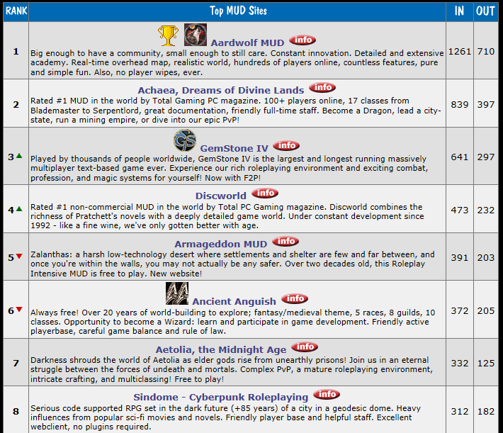
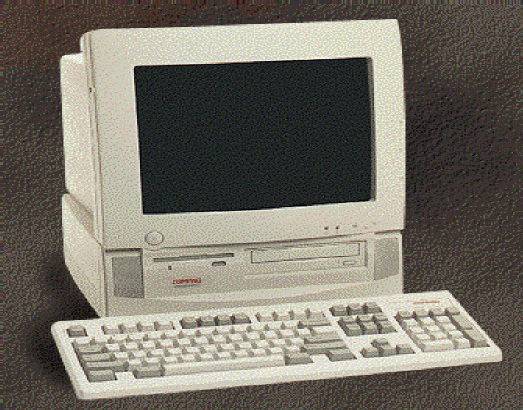
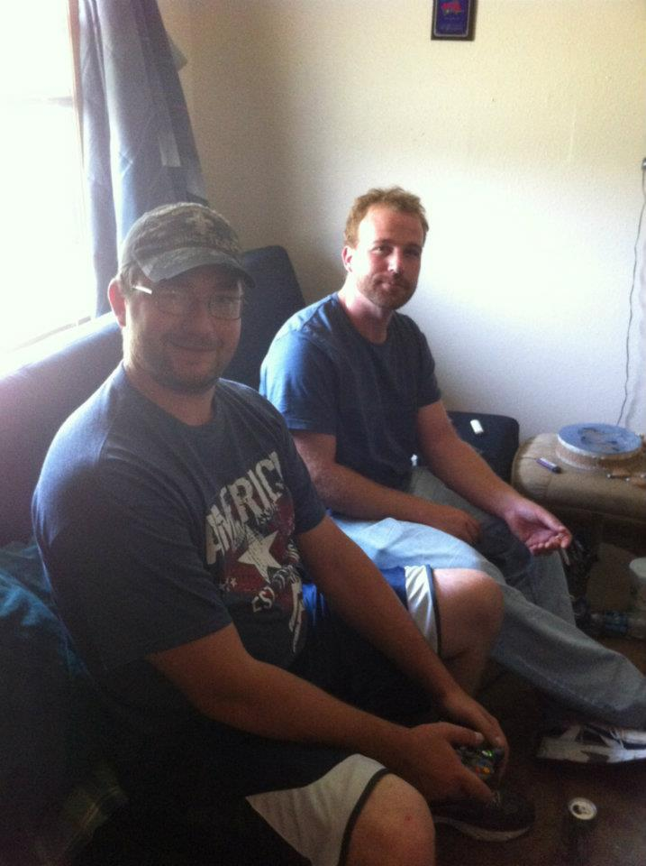

Text-based gaming as an intro to Computer Programming
-Jay Bennett
Firstly, yes, people still play text-based games! A quick glance at TopMudSites
shows a rolling list of some of the most higly traficked text-based games, each (at least those near the top of the list)
entertain hundreds of users per day from all over the world.

In the late 90's, not was much available in the way of PC graphics anyway.
This was my first computer:

So one night after class, while I was stumbling through Yahoo chatrooms (this used to be a thing, I swear) I happened across a link to a game
called Gemstone. Something about the scrolling text and the, then, strictly enforced roleplay environment was
extremely gratifying. The best way I've ever been able to describe the experience of MUD'ing is that it's like creating a character inside your favorite book
and being able to use that character to evolve the book's storyline. M.U.D., by the way, stands for Multi User Dungeon - a fancy, albeit misleadingly sordid,
term used to describe an immersive text-based gaming experience.
Alas, the 90's passed. School was over and life moved ever onward...

I'm the guy in back, waiting for my turn on the XBox. Hey, so I like gaming.
And life moved onward.
Until one day, I decided to try a text-based game again. What this one offered was a rich pvp (player versus player) environment, and a scriptable interface.
After a couple months of horsing around on the thing, I discovered you could improve your gaming experience dramatically with just a basic understanding of variables and
functions. Before long, a few of the more code saavy players had built their own scriptible clients for the games we were playing. Clients such as Zmud,
CMud, MUSHClient and Mudlet (my favorite, to date) introduced so much in the way of scripting that a few of us were able to earn money selling modifications built for them.
For myself, roleplay was out the window and I immersed myself, instead, into programming mud clients. The Mudlet client,
in particular, was fascinating to me. Written in C++ , with a fully moddable Qt interface and a Lua scripting engine, I found myself only logging in to the game
to test new features I'd built for the client.
A far cry from actual software development, it was still a great introduction to basic programming constructs. Also worth noting is, being written
to respond in a text-based environment meant regex or die, as the codebase grew and the client slowed.
I still log in to my favorite text game now and again, to peruse the newsboards and chat with old friends. Having recently become a father and decided
to make programming a career, I have very little time for much else. But I regret nothing. Were it not for Gemstone, I likely would have never known
what joy programming could bring me.